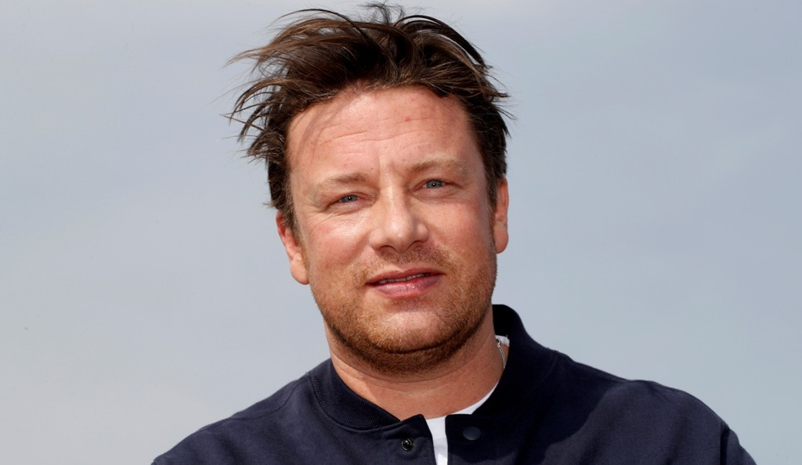

INICIO
MELHORES HAMBURGUERS
MELHORES RESTAURANTES
CONTACTOS
Gordon James Ramsay, é um chef de cozinha, autor e personalidade televisiva britânico nascido na Escócia.

Jamie Oliver, é um chef de cozinha e personalidade televisiva do Reino Unido.